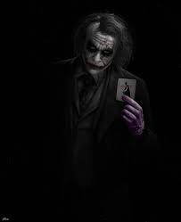
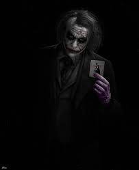

The Joker is a supervillain appearing in American comic books published by DC Comics. The character was created by Bill Finger, Bob Kane, and Jerry Robinson, and first appeared in the debut issue of the comic book Batman on April 25, 1940. Credit for the Joker's creation is disputed; Kane and Robinson claimed responsibility for the Joker's design while acknowledging Finger's writing contribution. Although the Joker was planned to be killed off during his initial appearance, he was spared by editorial intervention, allowing the character to endure as the archenemy of the superhero Batman. In his comic book appearances, the Joker is portrayed as a criminal mastermind. Introduced as a psychopath with a warped, sadistic sense of humor, the character became a goofy prankster in the late 1950s in response to regulation by the Comics Code Authority, before returning to his darker roots during the early 1970s. As Batman's nemesis, the Joker has been part of the superhero's defining stories, including the murder of Jason Todd—the second Robin and Batman's ward—and the paralysis of one of Batman's allies, Barbara Gordon. The Joker has had various possible origin stories during his decades of appearances. The most common story involves him falling into a tank of chemical waste that bleaches his skin white and turns his hair green and lips bright red; the resulting disfigurement drives him insane. The antithesis of Batman in personality and appearance, the Joker is considered by critics to be his perfect adversary. The Joker possesses no superhuman abilities, instead using his expertise in chemical engineering to develop poisonous or lethal concoctions and thematic weaponry, including razor-tipped playing cards, deadly joy buzzers, and acid-spraying lapel flowers. The Joker sometimes works with other Gotham City supervillains, such as the Penguin and Two-Face, and groups like the Injustice Gang and Injustice League, but these relationships often collapse due to the Joker's desire for unbridled chaos. The 1990s introduced a romantic interest for the Joker in his former psychiatrist, Harley Quinn, who became his criminal sidekick and girlfriend before finally escaping their abusive relationship. Although his primary obsession is Batman, the Joker has also fought other heroes, including Superman and Wonder Woman. One of the most iconic characters in popular culture, the Joker has been listed among the greatest comic book villains and fictional characters ever created. The character's popularity has seen him appear on a variety of merchandise, such as clothing and collectible items, inspire real-world structures (such as theme park attractions), and be referenced in a number of media. The Joker has been adapted in live-action, animated, and video game incarnations, including the 1960s Batman television series played by Cesar Romero and in films by Jack Nicholson in Batman (1989), Heath Ledger in The Dark Knight (2008), Jared Leto in the DC Extended Universe (2016–present), and Joaquin Phoenix in Joker (2019–present); Ledger and Phoenix each earned an Academy Award for their portrayals. Mark Hamill and others have provided the character's voice in media ranging from animation to video games. Website Designed by (SOHAIB) salem bamatraf Hahahahahahahahahahahahaha
Joker Pictures


 
